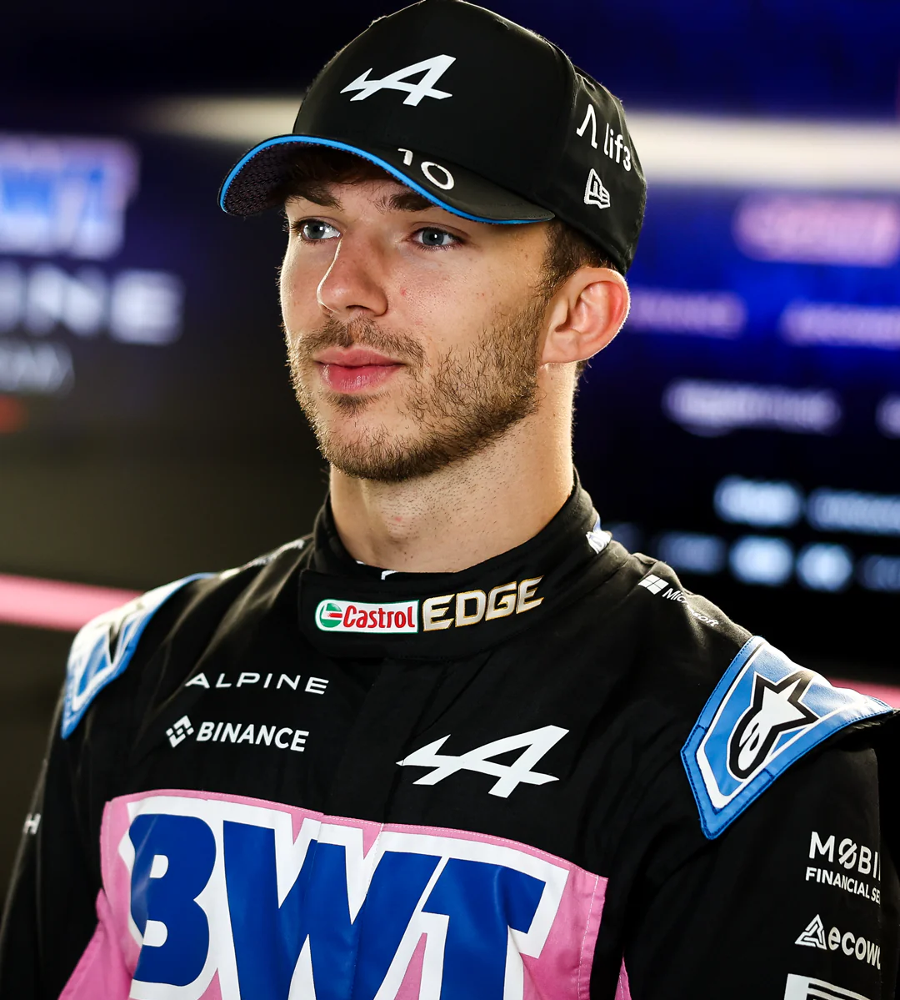
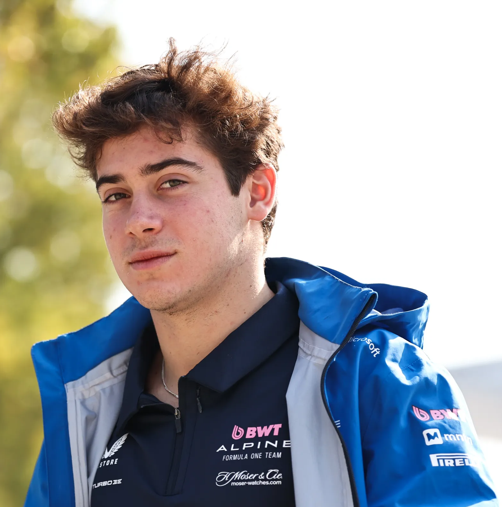

- Home
- Categoria
- Equipes
- Comunidade
A primeira tentativa de envolvimento da Alpine na Fórmula 1 remonta a 1968, quando o Alpine A350 foi construído, movido por um motor Gordini V8. No entanto, após o teste inicial com Mauro Bianchi em Zandvoort, o projeto foi encerrado quando foi descoberto que o motor produzia cerca de 300 cavalos em comparação com os 400 dos motores Cosworth V8. Após o projeto ser abandonado o A350 foi destruído. Em 1975, a empresa produziu o protótipo Alpine A500 para testar um motor turbo V6 de 1,5 L para a equipe de fábrica da Renault, que iria estrear na Fórmula 1 em 1977.
m 6 de setembro de 2020, a Renault anunciou a alteração do nome de construtor da sua equipe de Fórmula 1 para Alpine a partir da temporada de 2021, após uma reestruturação da organização interna das duas empresas com objetivo de promover a marca Alpine, que atualmente é uma subsidiária do grupo Renault.

Pierre Jean-Jacques Gasly (Ruão, 7 de fevereiro de 1996) é um automobilista francês que atua na Fórmula 1 pela equipe Alpine.[3] Fez sua estreia na
categoria em 2017 pela Toro Rosso, a partir do Grande Prêmio da Malásia, depois correndo doze etapas da temporada de 2019 pela Red Bull Racing, e
retornando à Toro Rosso a partir do Grande Prêmio da Bélgica. Sua primeira vitória na Fórmula 1 ocorreu no Grande Prêmio da Itália de 2020.
Em 2023, se transferiu para a Alpine. Foi campeão da Eurocopa de Fórmula Renault em 2013, vice-campeão da Fórmula Renault 3.5 Series em 2014, quando
se juntou ao programa Red Bull Junior Team. Gasly também venceu a temporada de 2016 da GP2 Series pilotando para a equipe da Prema Racing, e vice-campeão
da Super Fórmula Japonesa em 2017.

Franco Alejandro Colapinto (Pilar, 27 de maio de 2003) é um automobilista argentino que compete na Fórmula 1 pela equipe Alpine F1 Team. Ele estreou na
categoria em 2024, pela Williams, substituindo Logan Sargeant. Anteriormente, ele competiu no Campeonato de Fórmula 2 da FIA de 2024 com a equipe MP
Motorsport. Ele foi campeão da F4 Espanhola em 2019.
Em 27 de agosto de 2024, após o Grande Prêmio dos Países Baixos, foi anunciado que Colapinto substituiria Logan Sargeant como piloto de Fórmula 1 da equipe Williams pelo restante da temporada de 2024. Colapinto é o primeiro piloto de Fórmula 1 da Argentina desde Gastón Mazzacane, que correu pela última vez em 2001. No Grande Prêmio do Azerbaijão, Colapinto terminou em oitavo lugar, conquistando 4 pontos, os primeiros de um piloto argentino desde o segundo lugar de Carlos Reutemann no Grande Prêmio da África do Sul de 1982.
o dia 7 de maio de 2025, a Alpine confirmou a promoção de Colapinto, com ele estando programado para fazer sua estreia justamente em Ímola, sendo o mais novo companheiro de Pierre Gasly e tendo contrato garantido para cinco corridas. Em 7 de novembro de 2025, a Alpine confirmou a renovação do contrato de Colapinto e de Gasly para 2026.
